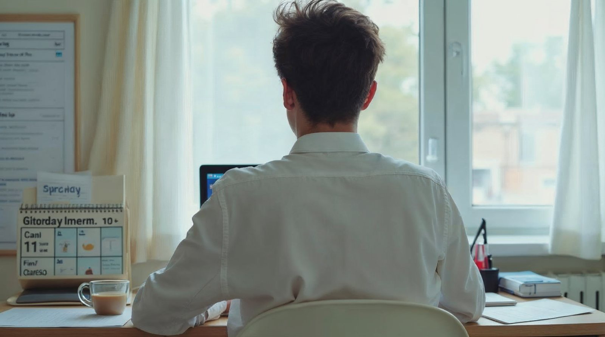
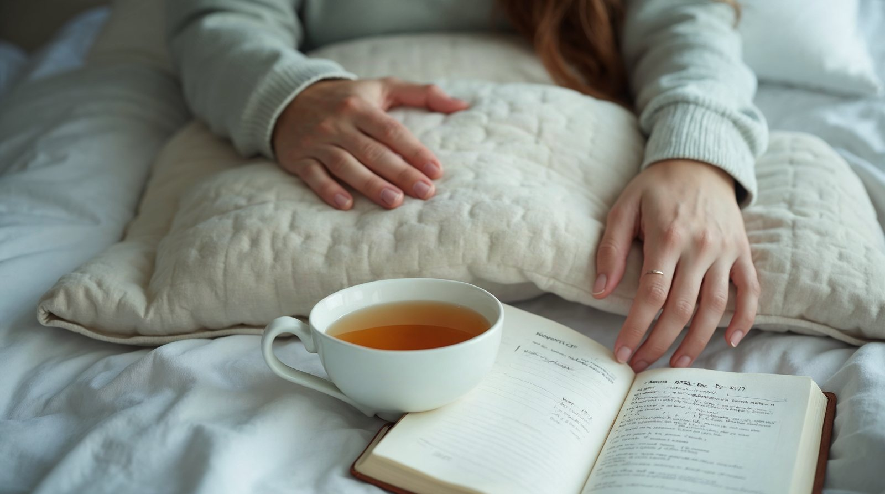
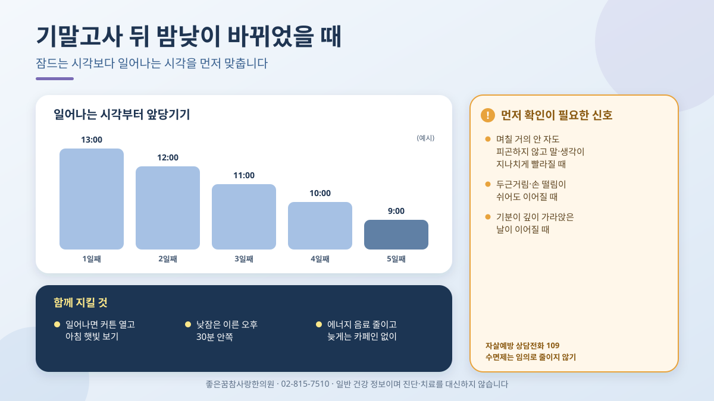

이종호 한의사 감수좋은꿈참사랑한의원 대표원장 (한의사 면허번호 19769)발행 2026-11-24 · 수정 2026-11-25
이 글의 차례
밤낮이 바뀐 리듬은 잠드는 시각보다 일어나는 시각과 아침 햇빛부터 며칠에 걸쳐 앞당기는 쪽이 수월하다는 분이 많습니다.
흑석동 중앙대나 상도동 숭실대 근처 원룸에서 자취하는 대학생분들은 시험 기간에 새벽까지 공부하다가 시험이 끝나면 오후에 일어나는 생활이 이어진다고 하시고, 방학 일정에 맞춰 리듬을 되돌리려 해도 밤만 되면 눈이 말똥말똥해 고민이라고 하십니다. 혼자 사는 방에서는 깨워 줄 사람도, 정해진 식사 시간도 없어 리듬이 더 쉽게 밀리기도 합니다.
며칠 거의 자지 않았는데도 피곤하지 않고 말과 생각이 지나치게 빨라진다면 먼저 확인이 필요합니다.
왜 이런 불편이 생길 수 있나요
- 시험 기간의 밤샘과 늦은 기상이 이어지면 몸의 하루 리듬이 뒤로 밀려 밤에 졸리지 않게 됩니다.
- 오후에 일어나면 아침 햇빛을 보지 못해 리듬을 앞당기는 신호가 약해지기 쉽습니다.
- 시험 기간에 늘린 카페인과 에너지 음료가 시험 뒤에도 습관으로 남아 잠을 방해하기도 합니다.
- 긴장이 풀리며 몰아서 자는 낮잠이 길어지면 밤잠이 더 늦어집니다.
- 첫 끼가 오후로 밀리고 야식이 늘면 식사 시각도 잠과 함께 뒤로 밀리는 경우가 많습니다.
먼저 이렇게 여쭙니다
- 시험 기간에는 보통 몇 시에 자고 몇 시에 일어났나요?
- 시험이 끝난 지금은 몇 시쯤 일어나시나요?
- 에너지 음료나 커피를 하루에 얼마나 드시나요?
- 방학 동안 정해진 일정(아르바이트, 계절학기 등)이 시작되는 날이 있나요?
- 하루 첫 끼와 마지막 끼는 보통 몇 시에 드시나요?
일상에서 먼저 해 볼 수 있는 것
- 하루에 30분에서 1시간씩 일어나는 시각을 앞당기기
- 일어나면 바로 커튼을 열거나 잠깐 밖에 나가 아침 햇빛 보기
- 낮잠은 오후 이른 시간에 30분 안쪽으로 짧게 자기
- 에너지 음료는 줄이고 오후 늦게는 카페인 없는 음료로 바꾸기
- 일어나고 1~2시간 안에 첫 끼를 먹어 식사 시각도 함께 당기기
- 낮에 학교 근처나 국사봉 쪽 산책길을 걸으며 몸을 움직이는 시간 만들기

상황별 예시
- 예를 들어 숭실대 근처 원룸에서 자취하는 학생이 기말고사 뒤 새벽 4시에 자고 오후 1시에 일어나는 생활이 일주일째인데 다음 주부터 오전 10시 아르바이트가 시작되는 경우에는 남은 날짜를 거꾸로 세어 하루 30분~1시간씩 기상 시각을 당기는 계획을 함께 짭니다.
- 예를 들어 흑석동에서 자취하며 시험 기간에 에너지 음료를 하루 두세 캔씩 마시던 학생이 시험이 끝난 뒤에도 습관처럼 오후 늦게 마시는 경우에는 한 번에 끊기보다 마지막으로 마시는 시각을 오후 이른 시간으로 옮기는 것부터 이야기합니다.
- 예를 들어 방학을 맞아 본가로 내려가기 전 며칠 동안 리듬을 맞추고 싶은 경우에는 내려가는 날의 기상 시각을 목표로 정하고, 그 전까지 아침 햇빛과 낮 활동을 늘리는 방법을 함께 정리합니다.
스스로 점검해 보세요
- 시험이 끝난 지 일주일이 넘었는데 아직 새벽 3시가 넘어 잠든다
- 일어나면 이미 정오가 지나 있는 날이 많다
- 낮잠을 1시간 넘게 자는 날이 있다
- 오후 늦게나 밤에 커피나 에너지 음료를 마신다
- 잠자리에서 휴대폰을 보다가 1시간 넘게 지나는 날이 있다
- 첫 끼가 오후 늦게 시작되고 밤에 야식을 먹는다
- 며칠 안에 맞춰야 하는 일정(아르바이트, 계절학기)이 있다
해당하는 항목이 많고 일정까지 남은 날이 짧다면 기상 시각부터 오늘 정해 두세요.

한의원에서 함께 살필 수 있는 경우
- 리듬을 되돌리려 해도 몇 주째 새벽까지 잠들지 못하는 경우 잠의 모양과 생활 전반을 함께 살핍니다.
- 밤샘 뒤 입맛이 없거나 소화가 불편한 경우 식사 시각과 소화를 함께 살핍니다.
- 시험이 끝났는데도 두근거림이나 긴장이 가라앉지 않는 경우 긴장 정도와 마음 상태를 함께 여쭙니다.
좋은꿈참사랑한의원에서는 잠들기 어려운지, 자주 깨는지, 새벽에 깨는지 잠의 모양을 먼저 듣고, 맥부터 짚어 본 뒤 필요하다고 판단될 때 설진·복진을 더해 몸 상태를 살핍니다. 첫 방문에는 시험 기간과 지금의 하루를 나란히 놓고, 맞춰야 하는 일정까지 남은 날짜에 맞춰 기상 시각을 언제까지 얼마나 당길지 함께 정합니다.
침이나 한약 상담 등 상태에 맞는 방법을 정하고, 귀가 전에는 생활에서 조절할 점과 다음에 확인할 일을 알려 드립니다. 상도역 3번 출구에서 걸어올 수 있어 학교 수업 사이나 방학 중 오전에 들르는 학생분도 있습니다.
얼마나 지켜보고 언제 상담할까요
- 시험이 끝나고 1~2주 안에 기상 시각을 조금씩 당기면서 리듬이 돌아오는 분이 많아, 그동안은 생활 조절로 지켜보셔도 됩니다.
- 3~4주가 지나도 새벽까지 잠들지 못하고, 일정이 있는 날 아침에 일어나기가 매번 어렵다면 상담을 받아 보시기를 권합니다.
- 며칠 거의 자지 않았는데 피곤하지 않고 말과 생각이 빨라지거나, 기분이 깊이 가라앉는다면 기다리지 말고 바로 확인을 받으세요.
이렇게 기록해 오시면 상담이 쉬워집니다
- 시험 기간과 지금의 잠드는 시각, 일어나는 시각
- 낮잠 시간과 길이
- 하루 카페인 음료 양과 마지막으로 마신 시각
- 리듬을 맞춰야 하는 날(아르바이트, 계절학기 시작일)
- 첫 끼와 마지막 끼 시각, 야식 여부
이런 증상은 먼저 확인이 필요합니다
- 며칠 동안 거의 자지 못했는데도 피곤하지 않고 말과 생각이 지나치게 빨라지는 경우
- 가슴이 두근거리고 손이 떨리는 증상이 쉬어도 이어지는 경우
- 기분이 깊이 가라앉아 아무것도 할 수 없는 날이 이어지는 경우
복용 중인 수면제나 다른 약이 있으면 진료 때 먼저 알려 주시고, 처방한 의사와 상의 없이 줄이거나 끊지 않습니다. 잠을 거의 못 자는 날이 이어지며 기분이 깊이 가라앉거나 극단적인 생각이 든다면 혼자 견디지 말고 ☎ 109에 바로 도움을 요청하세요.
함께 읽으면 좋은 글
- 과제와 시험으로 밤샘이 잦은 대학생의 잠 리듬이 무너졌을 때는 어떻게 되돌리나요?
- 낮에 햇빛을 쬐면 밤잠에 도움이 될까요?
- 대학생이 혼자 처음 한의원에 올 때는 무엇을 준비하면 되나요?

여쭙는 것
- 시험 기간에는 보통 몇 시에 자고 몇 시에 일어났나요?
- 시험이 끝난 지금은 몇 시쯤 일어나시나요?
- 에너지 음료나 커피를 하루에 얼마나 드시나요?
생활에서 해 볼 것
- 하루에 30분에서 1시간씩 일어나는 시각을 앞당기기
- 일어나면 바로 커튼을 열거나 잠깐 밖에 나가 아침 햇빛 보기
- 낮잠은 오후 이른 시간에 30분 안쪽으로 짧게 자기
한의원에서 함께 살필 것
- 리듬을 되돌리려 해도 몇 주째 새벽까지 잠들지 못하는 경우 잠의 모양과 생활 전반을…
- 밤샘 뒤 입맛이 없거나 소화가 불편한 경우 식사 시각과 소화를 함께 살핍니다.
- 시험이 끝났는데도 두근거림이나 긴장이 가라앉지 않는 경우 긴장 정도와 마음 상태를…
먼저 확인이 필요한 신호
- 며칠 동안 거의 자지 못했는데도 피곤하지 않고 말과 생각이 지나치게 빨라지는 경우
- 가슴이 두근거리고 손이 떨리는 증상이 쉬어도 이어지는 경우
- 기분이 깊이 가라앉아 아무것도 할 수 없는 날이 이어지는 경우
한눈에 보는 표
| 구분 | 핵심 |
|---|---|
| 여쭙는 것 | 시험 기간에는 보통 몇 시에 자고 몇 시에 일어났나요? 시험이 끝난 지금은 몇 시쯤 일어나시나요? |
| 생활에서 해 볼 것 | 하루에 30분에서 1시간씩 일어나는 시각을 앞당기기 일어나면 바로 커튼을 열거나 잠깐 밖에 나가 아침 햇빛 보기 |
| 한의원에서 함께 살필 것 | 리듬을 되돌리려 해도 몇 주째 새벽까지 잠들지 못하는 경우 잠의 모양과 생활 전반을 함께 살핍니다. 밤샘 뒤 입맛이 없거나 소화가 불편한 경우 식사 시각과 소화를 함께 살핍니다. |
| 먼저 확인이 필요한 신호 | 며칠 동안 거의 자지 못했는데도 피곤하지 않고 말과 생각이 지나치게 빨라지는 경우 가슴이 두근거리고 손이 떨리는 증상이 쉬어도 이어지는 경우 |
자주 묻는 질문
하룻밤을 꼬박 새우고 다음 날 일찍 자면 한 번에 돌아오지 않나요?
한 번에 돌리려다 다음 날 낮에 졸음이 심해 다시 낮잠을 길게 자는 경우가 많습니다. 며칠에 걸쳐 일어나는 시각부터 조금씩 앞당기는 방법을 권합니다.
수면 보조제를 먹어도 되나요?
드시려는 제품과 복용 중인 약이 있다면 진료 때 먼저 알려 주세요. 생활 리듬을 함께 정리한 뒤 필요한 부분을 이야기 나눕니다.
밤에 잠이 안 올 때 휴대폰을 보면 안 되나요?
밝은 화면은 잠드는 시각을 더 늦출 수 있어 잠자리에서는 멀리 두시기를 권합니다. 대신 조명을 낮추고 가벼운 책을 읽는 방법이 있습니다.
진료 시간은 어떻게 되나요?
좋은꿈참사랑한의원은 평일 09:30~20:00(점심 13:00~14:00), 토·일·공휴일 09:30~15:00에 진료합니다.
좋은꿈참사랑한의원은 재진 때 지난번 이야기부터 이어서 여쭙니다. 진료시간과 예약은 오시는 길에서 확인하세요.
어디서 상담받을 수 있나요?
좋은꿈참사랑한의원은 서울 동작구 만양로2길 2 신성빌딩 3층·5층(서울 동작구 상도동, 7호선 상도역 3번 출구 근처)에 있습니다. 한의사 3명(이종호 대표원장, 조영기 수석진료원장, 정원영 진료원장)이 진료합니다. 진료시간은 평일 09:30~20:00(점심 13:00~14:00), 토·일·공휴일 09:30~15:00이며, 방문 전 전화로 확인을 권합니다. 예약은 네이버 예약, 카카오톡 상담, 전화 02-815-7510로 받습니다.
이 글은 일반적인 건강 정보이며 개인의 진단이나 치료를 대신하지 않습니다. 증상이 있거나 복용 중인 약이 있다면 진료를 통해 확인하세요. 치료 효과는 개인마다 다를 수 있습니다.
작성 기준: 일반적으로 알려져 있는 건강 정보를 참고해 정리했습니다(대표원장 감수). 증상 기록은 1~2주 동안 하루 1회, 비슷한 시간에 적어 오시면 지난 상태와 비교하기 쉽습니다.